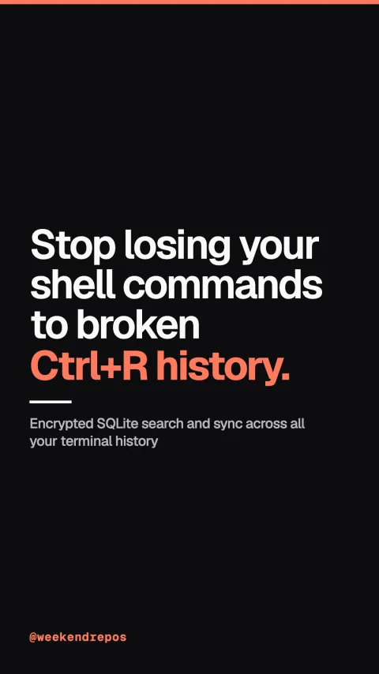

atuin
Encrypted SQLite search and sync across all your terminal history

Stop losing your shell commands to broken Ctrl+R history.
Install Atuin and import your existing shell history in seconds.
First, install Atuin with a single curl command. It immediately imports your existing bash, zsh, or fish history into a structured local database.
curl · instant bash, zsh, and fish import
Search commands by execution time, directory, and exit code.
Second, pressing Ctrl+R brings up an interactive TUI with fuzzy search, recording exact exit codes, execution duration, and directory context for every command.
full context recording · exit code & execution time
End-to-end encrypted synchronization across all your machines.
Third, sync your terminal history securely across your laptop, work desktop, and remote servers with zero-knowledge end-to-end encryption.
end-to-end encryption · zero-knowledge sync
Open source on GitHub: 22,000 stars and MIT licensed.
It is fully open source in Rust under the MIT license with over twenty-two thousand stars on GitHub.
github.com/atuinsh/atuin · MIT License